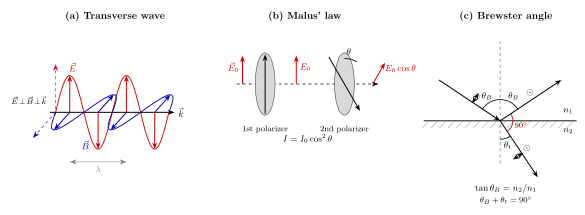

光为什么会偏振?
上一节我们谈到衍射极限: 有限孔径把一点展成一团 Airy 斑, 这是波的普遍命运. 但波还有另一件事可以讲. 声波在空气里只会"一伸一缩", 它只有一个振动方向, 与传播方向共线; 而光波不一样, 你把一个偏振片在手里缓缓旋转, 屏幕的亮度会从最亮过渡到几乎全黑, 再回到最亮. 光在告诉你: 它有一个与传播方向垂直的"朝向", 这个朝向, 就是偏振.
为什么光会有偏振, 而声音没有? 这不是一个小问题. Fresnel 在 1820 年代曾经为它苦苦挣扎: 如果光是纵波 (像声波一样沿传播方向振动), 那么方解石的双折射、Malus 看到的反光消失、都无法解释. 他最后被迫承认: 光是一种横波. 半个世纪之后 Maxwell 给出了这个结论的根本理由 —— 因为在真空里, 电场的散度为零, $\nabla\cdot\vec E = 0$. 就是这一行方程, 决定了光不能是纵波.
一、横波: 为什么 $\vec E$ 一定垂直于 $\vec k$
从 Maxwell 方程组出发, 真空中没有电荷与电流, 四个方程为
$$ \nabla\cdot\vec E = 0, \quad \nabla\cdot\vec B = 0, \quad \nabla\times\vec E = -\partial_t\vec B, \quad \nabla\times\vec B = \mu_0\varepsilon_0\,\partial_t\vec E. $$
假设一个平面波解 $\vec E(\vec r, t) = \vec E_0\,e^{i(\vec k\cdot\vec r - \omega t)}$, 代入第一个方程, 我们得到
$$ i\vec k\cdot\vec E_0 = 0 \;\Longrightarrow\; \vec k\perp\vec E_0. \tag{1} $$
同理 $\vec k\perp\vec B_0$. 这里没有近似, 没有"恰好如此", 就是 Gauss 定律在自由空间的直接后果: 因为真空里没有可以"堆积"的电荷, 电场线不能沿着传播方向起伏. 光天生就是横波.
再代入 Faraday 定律 $\nabla\times\vec E = -\partial_t\vec B$, 可以得到
$$ \vec B_0 = \frac{1}{\omega}\,\vec k\times\vec E_0, $$
也就是 $\vec E$、$\vec B$、$\vec k$ 三者构成右手正交系. 这正是我们在图 1(a) 中要画出的几何: 红色 $\vec E$ 箭头、蓝色 $\vec B$ 箭头, 两者互相垂直, 又同时垂直于黑色传播方向 $\vec k$, 像三根互不相让的坐标轴, 以频率 $\omega$ 一起呼吸.
既然 $\vec E$ 必须垂直于 $\vec k$, 那么在垂直于 $\vec k$ 的平面上, $\vec E$ 可以指向任意方向 —— 这就是偏振的自由度所在. 我们可以取两个正交基 $\hat e_1, \hat e_2$ (都垂直于 $\vec k$), 把任意偏振写成
$$ \vec E = (E_1\hat e_1 + E_2\hat e_2\,e^{i\delta})\,e^{i(\vec k\cdot\vec r - \omega t)}. $$
相位差 $\delta$ 决定偏振状态: $\delta = 0$ 是线偏振 (两分量同步振动), $\delta = \pm\pi/2$ 且 $E_1 = E_2$ 是圆偏振 ($\vec E$ 矢量端点在横截面上画圆), 其它是椭圆偏振. 这两个自由度 ($E_1, E_2, \delta$, 扣掉整体相位还剩两个独立参数) 在量子层面对应光子自旋 $\pm\hbar$ 的两种投影 —— 左旋与右旋圆偏振光子.

二、Malus 定律: 偏振片只"筛"一个方向
有了横波这把钥匙, 现在考虑一个很日常的装置: 偏振片. 它是一种"在某个方向上吸收, 在垂直方向上透过"的薄膜 (早期由 Land 在 1938 年用 polyvinyl alcohol 碘晶体做出). 我们把偏振片的透振轴方向记作 $\hat a$.
入射一束线偏振光, 振幅 $\vec E_0 = E_0\hat e$ (单位矢量 $\hat e$ 在横截面内). 透过偏振片后, 只有沿 $\hat a$ 的分量被保留:
$$ \vec E_{\text{out}} = (E_0\hat e\cdot\hat a)\hat a = E_0\cos\theta\,\hat a, $$
其中 $\theta$ 是 $\hat e$ 与 $\hat a$ 的夹角. 光强正比于场的模方, 于是有 Malus 定律
$$ I(\theta) = I_0\cos^2\theta. \tag{2} $$
Malus 在 1809 年发表这条规律时并不是用"偏振片"这个器件 —— 那时根本没有偏振片. 他用的是两片方解石, 方解石的双折射可以把入射光自然分成两束正交偏振. 但公式的形式是普适的: 只要知道两束线偏振基的夹角, 能量就按 $\cos^2$ 分配.
做一次具体估算. 把两片理想偏振片叠在一起, 透振轴夹角 $\theta = 30°$, 入射自然光强为 $I_0$. 自然光是无数随机方向线偏振的非相干叠加, 过第一片时所有方向被投影到第一片的透振轴, 平均下来恰好剩一半, 也就是 $I_0/2$. 再过第二片, 按 Malus 定律衰减为
$$ I = \frac{I_0}{2}\cos^2(30°) = \frac{I_0}{2}\cdot\frac{3}{4} = 0.375\,I_0. $$
若夹角为 $45°$, 剩 $I_0/4$; 若夹角为 $60°$, 剩 $I_0/8$. 两个极限非常漂亮: 当 $\theta = 0$ (透振轴平行), $I = I_0/2$, 光全部透过; 当 $\theta = 90°$ (透振轴正交), $I = 0$, 一片死黑. 这两个极限, 一个对应"光完全被通过", 一个对应"光完全被拒绝", 中间由 $\cos^2\theta$ 平滑连接. 实验上把两片偏振片缓缓相对旋转, 你能肉眼看到亮度完整地走完这条曲线 —— 那是 Malus 定律最直接的展示.
还有一个更漂亮的判据: 把三片偏振片串起来, 第一片 $0°$, 第三片 $90°$, 看起来透振轴正交, 应该全黑; 但如果把第二片放在中间, 倾斜 $45°$, 则透射光强为 $(I_0/2)\cdot\cos^2 45°\cdot\cos^2 45° = I_0/8$. 插一片反而变亮, 这是纯粹的投影几何带来的非直观结果, 也是课堂上总能让人眼前一亮的小演示.
三、Brewster 角: 反射如何挑选偏振
Malus 定律告诉我们偏振片怎么工作. 但偏振还有一个更有意思的来源: 界面反射. 在很多非金属界面 (水面、玻璃、湖面、车漆) 上, 反射光是部分偏振甚至完全偏振的. 尤其当入射角取某个特殊值时, 反射里只剩一种偏振; 这个角度叫 Brewster 角, 是苏格兰物理学家 David Brewster 在 1815 年发现的.
考虑一束光从折射率 $n_1$ 的介质斜入射到 $n_2$ 的界面上. 我们按入射面 (包含入射光与界面法线的平面) 分解入射电场: 在入射面内振动的叫 p-极化 (parallel), 垂直于入射面振动的叫 s-极化 (senkrecht, 德语"垂直"). 这两个分量的反射率由 Fresnel 公式给出, 分别为
$$ r_s = \frac{n_1\cos\theta_i - n_2\cos\theta_t}{n_1\cos\theta_i + n_2\cos\theta_t}, \quad r_p = \frac{n_2\cos\theta_i - n_1\cos\theta_t}{n_2\cos\theta_i + n_1\cos\theta_t}. $$
这里 $\theta_i, \theta_t$ 分别是入射角与折射角, 由 Snell 定律 $n_1\sin\theta_i = n_2\sin\theta_t$ 相连. 我们不急着展开 Fresnel 公式的推导, 只问一个关键问题: $r_p$ 什么时候等于零?
直接令 $r_p = 0$, 得到 $n_2\cos\theta_i = n_1\cos\theta_t$. 结合 Snell 定律, 可以化简 (用 $\cos\theta_t = \sin\theta_i$ 对应 $\theta_i + \theta_t = 90°$) 为
$$ \tan\theta_B = \frac{n_2}{n_1}. \tag{3} $$
这就是 Brewster 条件. 它背后有一个非常物理的图景: 在介质里, 入射光让界面附近的分子偶极子沿着透射电场方向振动, 这些偶极子向空中辐射就是反射光. 而偶极子不会沿着自身振动方向辐射 —— 一根天线的主瓣永远垂直于它的轴. 当 $\theta_i + \theta_t = 90°$ (反射光方向恰好与折射光方向垂直), 折射光里的 p-偶极子正好"朝向"反射方向, 于是没有 p-极化的反射辐射. 只有 s-极化 (偶极子垂直于入射面, 它的辐射可以指向反射方向) 能反射. 这也是图 1(c) 想画清楚的几何: 反射光与折射光严格垂直, 反射光只剩 $\odot$ 符号 (垂直纸面的 s 分量).
四、数字、自然光与 Malus 的那个傍晚
把公式 (3) 代入常见介质. 从空气 ($n_1 = 1$) 射入水 ($n_2 = 1.33$):
$$ \theta_B^{\text{water}} = \arctan(1.33) \approx 53.1°. $$
射入玻璃 ($n_2 = 1.50$):
$$ \theta_B^{\text{glass}} = \arctan(1.50) \approx 56.3°. $$
射入金刚石 ($n_2 = 2.42$):
$$ \theta_B^{\text{diamond}} = \arctan(2.42) \approx 67.5°. $$
这些角度的共同特点是: 比典型的 $45°$ 要大一些, 而且随介质变致密而变大 —— 越致密的材料, 反射越"挑食", Brewster 角越接近掠射. 同时, 在 Brewster 角之外的角度, 反射光不是完全偏振, 但仍然部分偏振, 总体偏向 s-极化. 这就是为什么夏天开车时, 前方公路或湖面的反光那么刺眼: 那主要是 s-偏振, 水平方向振动的光. 偏振墨镜就是把透振轴做成"垂直方向"的偏振片, 让水平偏振的眩光被挡掉, 而其它方向的光仍能透过一半左右, 眼前一下子清爽了. 同样的原理, 摄影师在镜头前加偏振滤镜, 可以消掉玻璃橱窗的反光, 直接拍到橱窗内的东西.
自然光 (太阳光、白炽灯、蜡烛焰) 是一大堆原子随机发射的光子的非相干叠加. 每个原子的跃迁有自己的偶极方向, 这些方向在统计上均匀分布, 所以自然光可以看成两种线偏振 (任取一对正交基) 的等量、非相干叠加. 过一片理想偏振片时, 两分量相互独立, 每个分量的平均投影平方为 $1/2$, 于是出射强度就是 $I_0/2$ —— 这是自然光遇到偏振片的一般规律, 独立于偏振片的朝向.
现在回到历史. 1809 年的一个傍晚, Étienne-Louis Malus 从他在巴黎卢森堡宫 (Palais du Luxembourg) 附近的公寓里望出去, 透过一块方解石看窗户上反射的夕阳. 他发现, 当方解石旋转到某个角度时, 方解石出射的两束光之一几乎完全消失. 换句话说, 傍晚从窗玻璃反射来的那束光, 本身已经是偏振的 —— 是大自然替他先做了一次筛选. 他意识到: 反射, 可以产生偏振. 他把这种现象命名为 "polarization"(偏振), 这个词沿用至今. Malus 本人是军人出身, 参加过拿破仑的埃及远征, 又在工程兵团里做数学物理, 43 岁早逝. 他没有看到 Maxwell 方程, 也没有看到 Fresnel 的横波理论, 但他为两者都铺了石阶.
方解石的双折射本身更古老, 是 Huygens 1690 年在《光论》里最早系统讨论的 —— 他当时还不知道偏振这个概念, 只能说"方解石里有两种不同的光". 一个世纪后, Malus 从反射里独立发现了偏振; 再十几年, Fresnel 把横波写成方程, 方解石的两束光、Malus 的反光、偏振片的消光曲线, 统统被同一个"$\vec E$ 垂直于 $\vec k$"的骨架串了起来. 再过四十年, Maxwell 写下他的方程, $\nabla\cdot\vec E = 0$ 那一行, 就是本章开头我们用来证明"光是横波"的那一行. 三层历史, 一条物理.
偏振今天走得更远. 3D 电影把左右眼图像分别用两种互相正交的圆偏振光投到屏幕上, 观众戴的眼镜两片滤片正好是对应的圆偏振片 —— 这样即使你歪着头, 左右眼分离也不会失败 (这是圆偏振相对线偏振的优势). LCD 屏幕的每一个像素背后都是一对偏振片加一层液晶, 液晶受电压扭转与否决定光能否透过第二片偏振片, 这是 Malus 定律在每秒 60 次地被工业化调用. 偏振遥感可以穿透烟雾, 偏振显微镜可以显示晶体应力, 天文学里偏振观测能探测星际磁场. 这一切的根, 都在 $\vec k\cdot\vec E = 0$ 这一行.
小结
本节我们问的是"光为什么会偏振". 答案分三层. 第一层, 横波本质: Maxwell 方程的 Gauss 定律在真空中要求 $\vec k\cdot\vec E = 0$, 光只能在垂直于传播方向的平面内振动, 这带来两个独立的偏振自由度. 第二层, Malus 定律 $I = I_0\cos^2\theta$ 是偏振片投影的必然结果, 极限 $\theta = 0, 90°$ 对应光的全透与全消. 第三层, Brewster 角 $\tan\theta_B = n_2/n_1$ 告诉我们界面反射会挑选偏振, 玻璃 56.3°、水 53.1° 这些数字决定了偏振墨镜和摄影滤镜的使用. 偏振是光独有的——声波没有, 引力波有两个类似的偏振模式但几何不一样, 电子德布罗意波的"偏振"对应自旋 1/2. 一句话: 在"光是什么"这张清单里, 偏振是它作为横向矢量场的身份证. 下一节我们让这条身份证走得更远——把大量原子相干地激发, 让所有光子步调一致, 就得到激光.
▲